Australia
Holden
Holden is a former car brand from Australia, founded in 1856 by James Alexander Holden, Sir Edward Holden. It stopped in 2021. This page lists 41 of its models and their generations, with facts from Wikipedia.

_LS_hatchback_(2018-10-22)_01.jpg){kind=link}
- Founded
- 1856
- Models
- 41
- Generations
- 73
- Photos
- 61
All models and generations
40 models, each with all its generations.
Past models
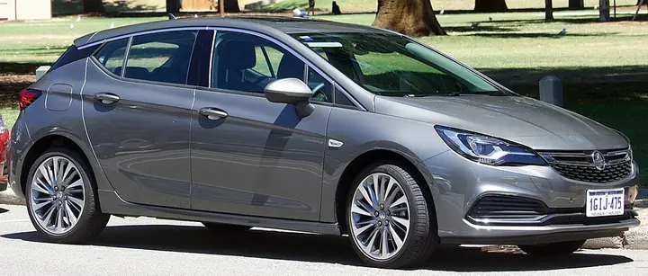
Holden Astra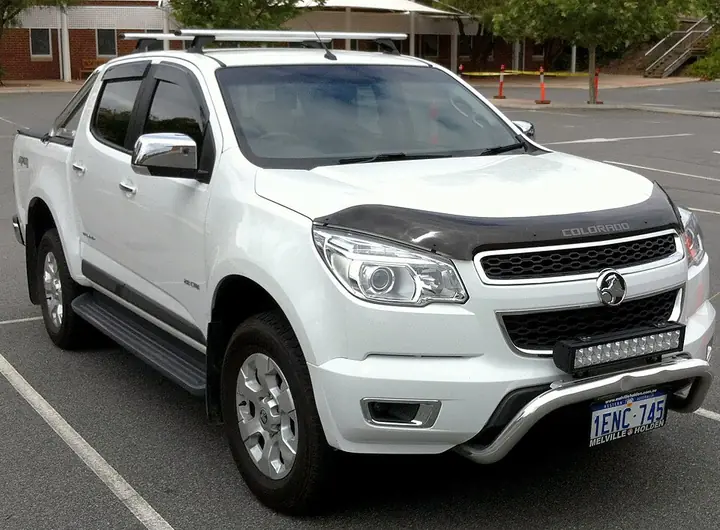
Holden Colorado Holden Commodore
Holden Commodore- Holden Barina
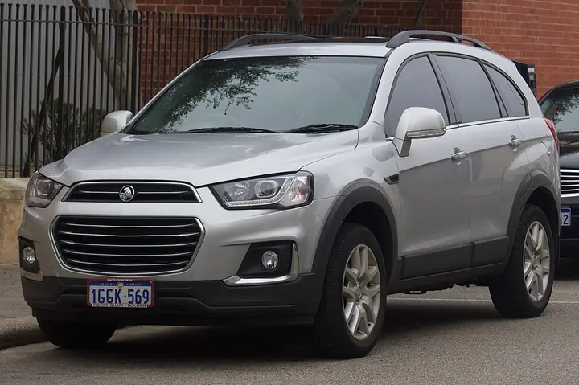
Holden Captiva Holden Caprice
Holden Caprice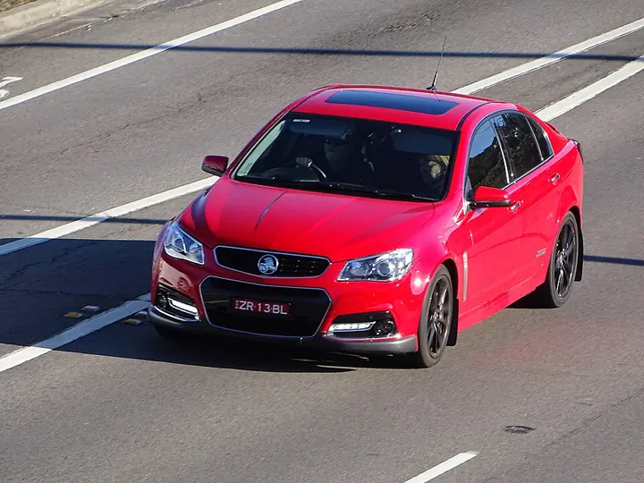
Holden SS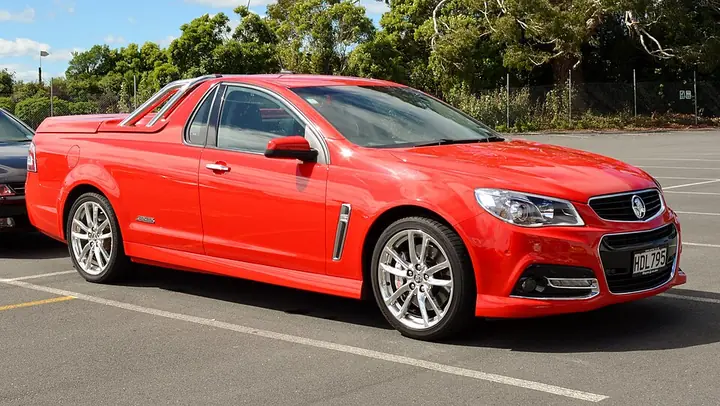
Holden Ute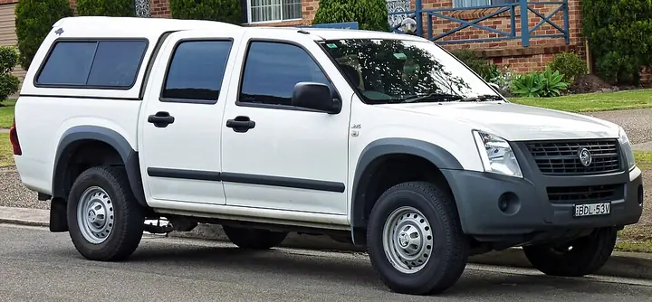
Holden Rodeo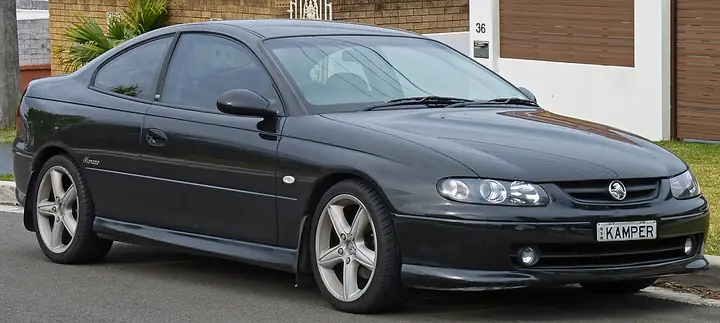
Holden Monaro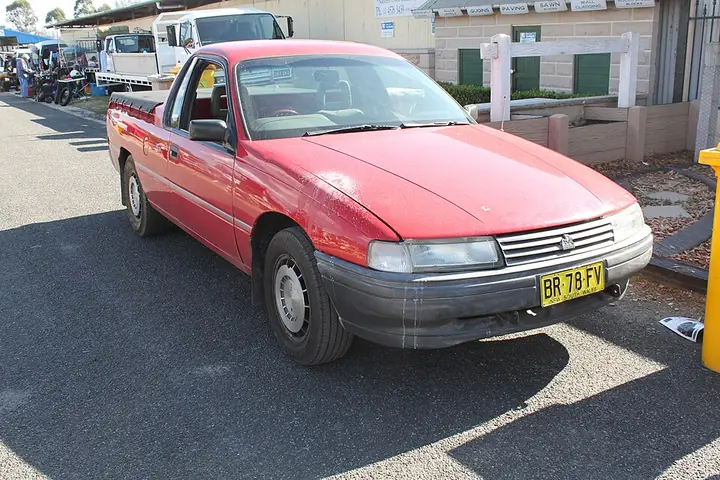
Holden Utility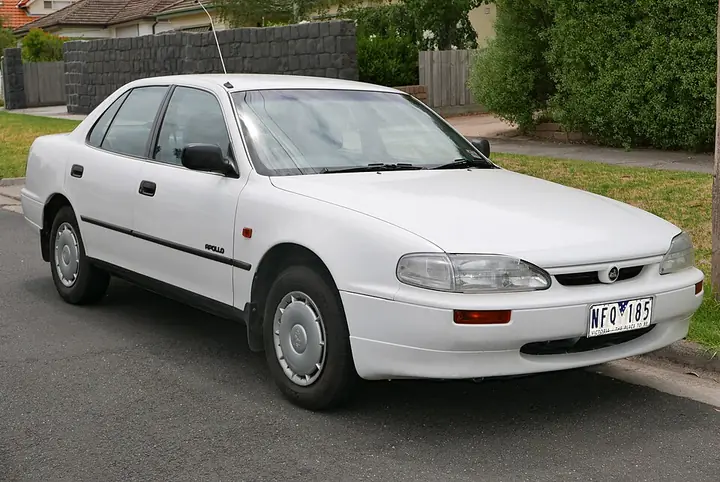
Holden Apollo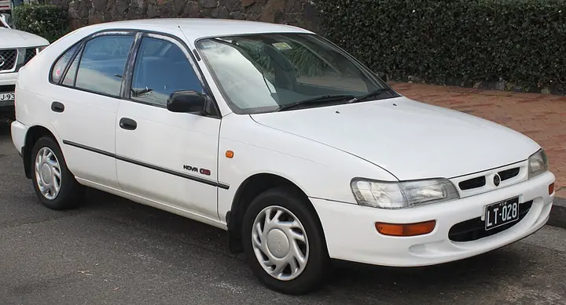
Holden Nova Holden Camira
Holden Camira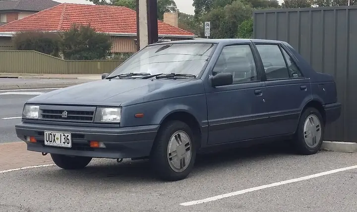
Holden Gemini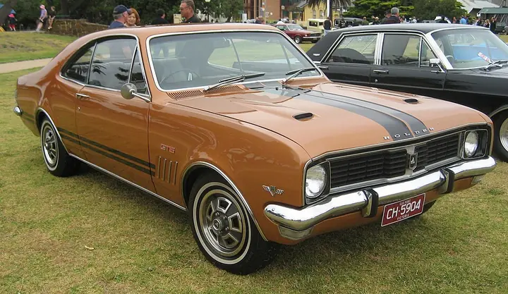
Holden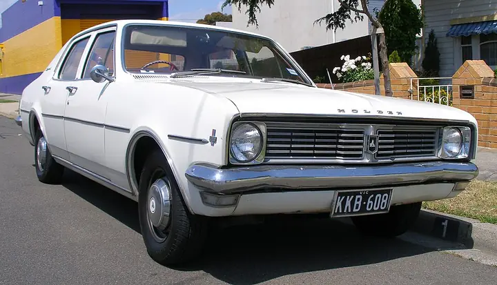
Holden Kingswood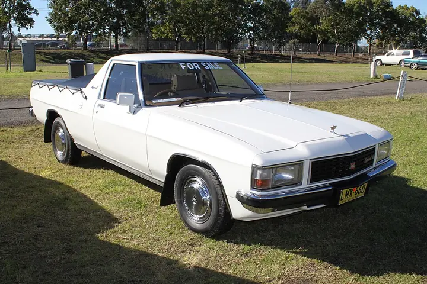
Holden WB- Holden HZ
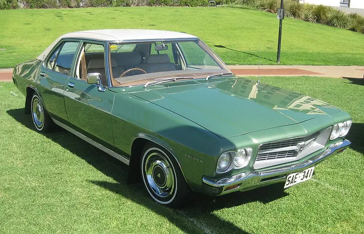
Holden Premier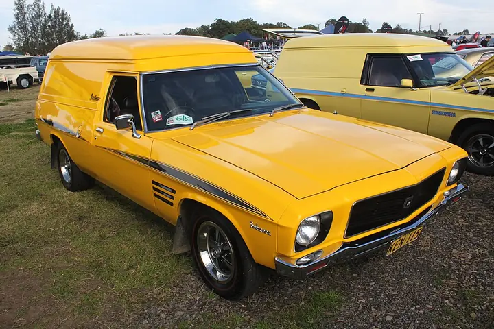
Holden Sandman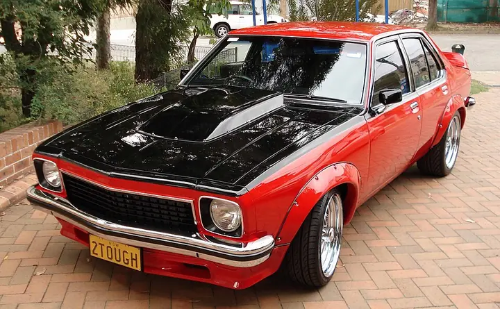
Holden Torana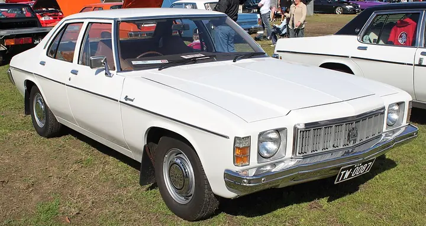
Holden HX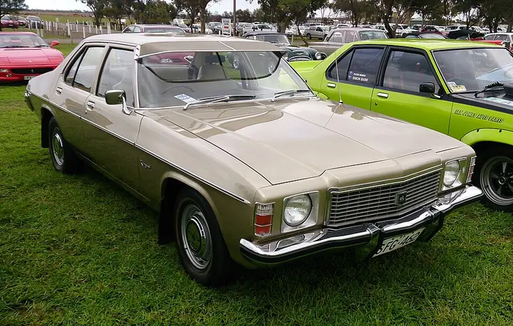
Holden HJ- Holden HQ
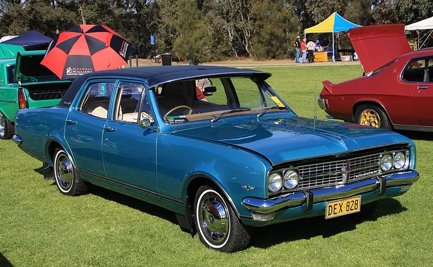
Holden Brougham- Holden HG
- Holden HT
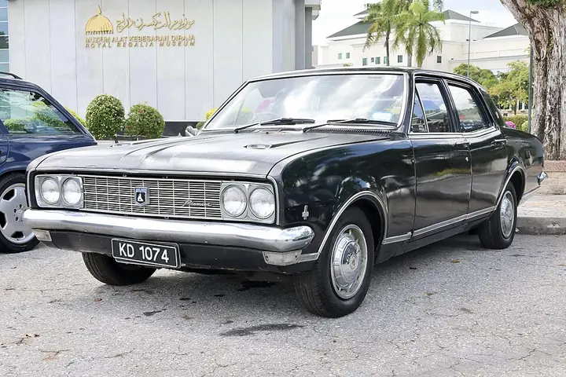
Holden HK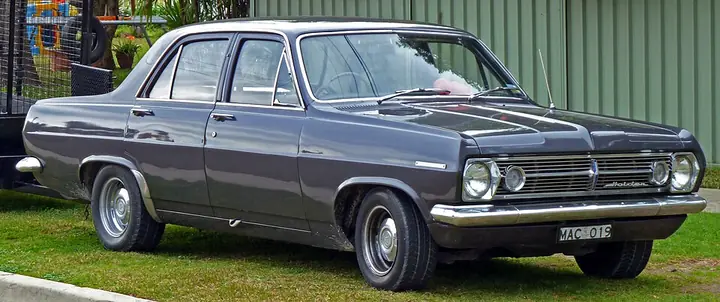
Holden HR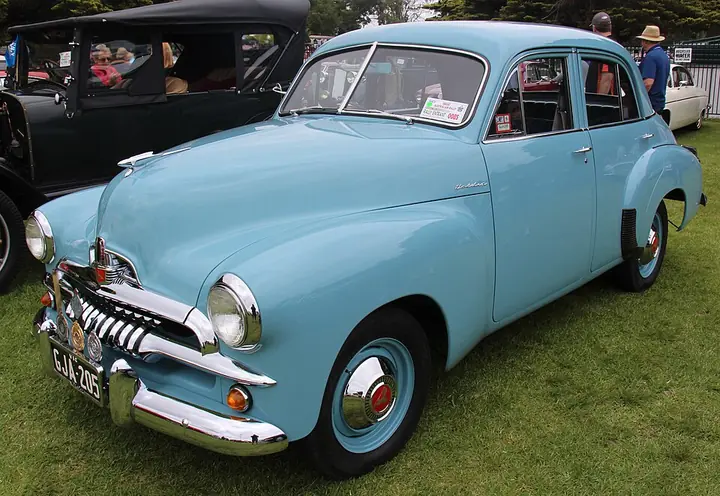
Holden Special- Holden HD
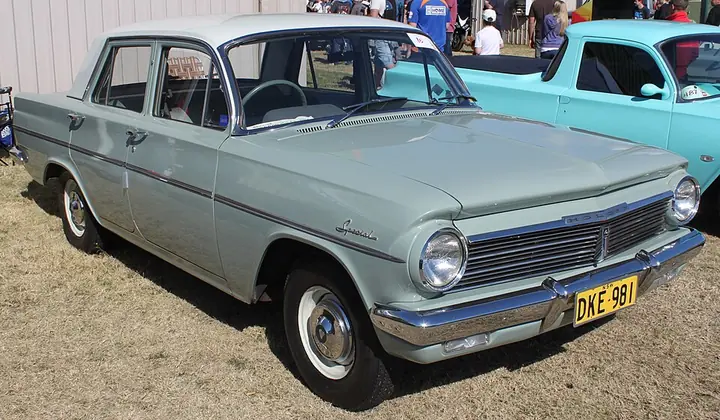
Holden EH- Holden EJ
- Holden EK
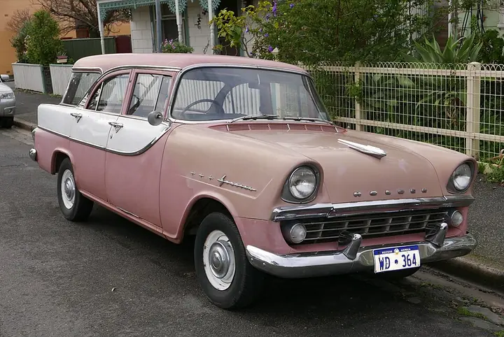
Holden FB- Holden FC
- Holden FE
 Holden FJ
Holden FJ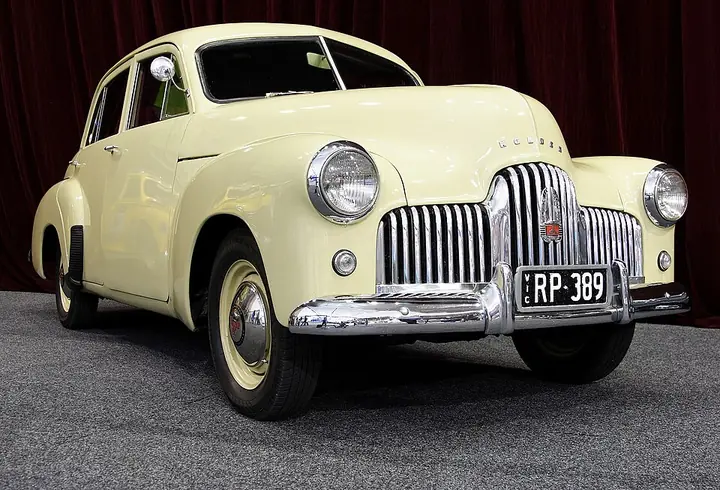
Holden 48-215
Racing cars
1 racing cars: Formula One, endurance, rally and touring.
Source: Wikipedia, CC BY-SA 4.0.